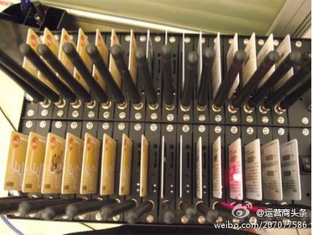

还是应该追问，为什么假造的业绩能起作用呢？//@青梅:神器！//@我是二姐夫: 养卡器一般是代理商用来骗取开户佣金和终端补贴的。运营商自己的基层员工很少会用这个吧 //@春天的启航:一路狂奔，不顾风景、不要廉聇、不负责任的运营商们，依然摆脱不了被垄断、被肢解、被边缘、被抛弃的N_1奶的宿命!!!@运营商头条:【运营商KPI之困：员工用养卡器造业绩】三大运营商都面临着移动用户增长的天花板，一些非常规手段就出现了。为了完成KPI指标，基层员工有很多“创新”，例如养卡器，这是一个有着上百卡槽的设备，可直接把未剪的SIM卡一个个插进去，自动相互拨打，发短信，还能订购业务。是时候该放慢脚步了~ 
照片都拍得不错。@CTO俱乐部:#SDCC#CTO论道成功举办，感谢二十多位技术管理者参与，活动详情及精彩花絮可查看 网页链接 @大学001 @陶建辉快乐妈咪 @蒋涛CSDN @耿新跃 @暴风杨立东 @阿朱 @XuehuaOnAds @赶集大罗 @祝凌云的微博 @栾义来 @联合永道冯国馨 @云中陶波 @宅急送刘家清 @应时而生_ @肖彬_旺店通ERP @Ada李力